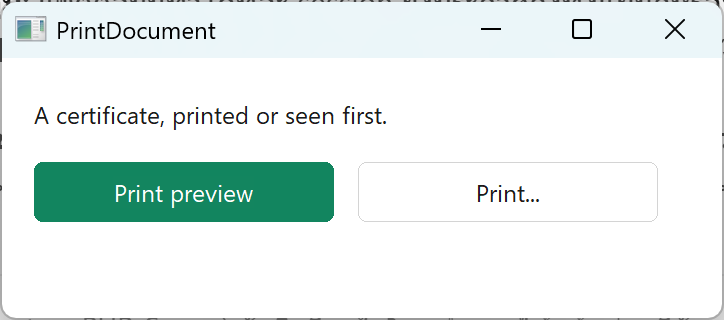

เอกสารสำหรับพิมพ์ (PrintDocument)
ในกล่องเครื่องมือ: เอกสารสำหรับพิมพ์ · เทียบกับ WinForms: PrintDocument
พิมพ์ออกเครื่องพิมพ์ โดยโปรแกรมวาดแต่ละหน้าเองในโค้ด - ข้อความ เส้น กรอบ รูป เช่น ใบเสร็จ ใบประกาศ รายงาน (ถ้าต้องการออกแบบรายงานด้วยการลากวาง ดู รายงานพิมพ์)
- event PrintPage ได้
e: &PrintPageEventArgsไว้วาดหน้ากระดาษ:set_font,set_color,draw_text,draw_line,draw_rect,draw_image- หน่วยเป็นร้อยส่วนของนิ้ว e.margin_boundsพื้นที่ภายในขอบกระดาษ · มีหลายหน้า:e.set_has_more_pages(true)print_preview()ดูก่อนพิมพ์ ·print_dialog()ให้เลือกเครื่องพิมพ์ · Landscape กระดาษแนวนอน

อยู่ในกล่องเครื่องมือกลุ่ม การพิมพ์ (Printing) - ลากมาวางแล้วมันจะไปอยู่ในแถบด้านล่างของตัวออกแบบ (ไม่ได้อยู่บนหน้าต่าง) · ในโค้ดเรียกมันว่า ui.ชื่อId ซึ่งเป็นชนิด phai_ui::ctl::PrintDocument
ตัวอย่าง
1. วาดหน้ากระดาษ
fn certificate_print_page(&mut self, _ui: &PrintdocumentDemoUi, e: &PrintPageEventArgs) {
// Drawn inside the margins; units are hundredths of an inch.
let m = e.margin_bounds;
e.set_color("#12855f");
e.set_pen_width(3);
e.draw_rect(m);
e.set_font("Segoe UI", 36, true, false);
e.draw_text("Certificate", m.x + 60, m.y + 60);
e.set_color("black");
e.set_font("Segoe UI", 18, false, false);
e.draw_text("for finishing the Phai Studio lessons", m.x + 60, m.y + 160);
e.set_has_more_pages(false); // one page
}2. ดูก่อนพิมพ์ และพิมพ์
fn preview_clicked(&mut self, ui: &PrintdocumentDemoUi) {
ui.certificate.print_preview();
}
fn print_clicked(&mut self, ui: &PrintdocumentDemoUi) {
ui.certificate.print_dialog(); // Windows' Print dialog, then the pages
}หน้าต่างตัวอย่างทั้งหมด: printdocument_demo.phaiform กับ printdocument_demo.rs ในโปรเจกต์ docs/help-src/examples/controls - รันด้วย cargo run -- printdocument
Method ของ PrintDocument
| Method | ทำอะไร |
|---|---|
set_painter(&self, paint: Painter) | ให้ฟังก์ชันอื่นวาดแต่ละหน้าแทน event PrintPage (รายงานใช้แบบนี้) |
printer_name(&self) -> String | เครื่องพิมพ์ที่ใช้ (ว่าง = เครื่องหลักของ Windows) |
set_printer_name(&self, name: &str) | เลือกเครื่องพิมพ์ตามชื่อ |
landscape(&self) -> bool | กระดาษแนวนอนไหม |
set_landscape(&self, on: bool) | แนวนอน (true) หรือแนวตั้ง |
margins(&self) -> [i32; 4] | ขอบกระดาษ ซ้าย บน ขวา ล่าง (ร้อยส่วนของนิ้ว) |
set_margins(&self, left: i32, top: i32, right: i32, bottom: i32) | ตั้งขอบกระดาษ |
print(&self) -> usize | พิมพ์ทุกหน้าทันทีโดยไม่ถาม ได้จำนวนหน้า |
print_to_file(&self, printer: &str, path: &Path) -> usize | พิมพ์ลงไฟล์ผ่านเครื่องพิมพ์ เช่น "Microsoft Print to PDF" ได้ไฟล์ PDF |
print_dialog(&self) -> usize | หน้าต่างพิมพ์ของ Windows (เลือกเครื่อง จำนวนชุด) แล้วพิมพ์ |
page_setup(&self) -> bool | หน้าต่างตั้งค่ากระดาษ ขอบ แนว - false เมื่อกด Cancel |
page_count(&self) -> usize | เอกสารมีกี่หน้า (วาดโดยไม่พิมพ์) |
print_preview(&self) | หน้าต่างดูก่อนพิมพ์ มีปุ่มพิมพ์ในตัว |
Properties
ตั้งได้ในหน้าต่าง Properties เมื่อเลือกมันบนฟอร์ม - ตารางนี้สร้างจาก Phai Studio เอง จึงตรงกับที่เห็นในโปรแกรมเสมอ
| Property | ค่าเริ่มต้น | ทำอะไร |
|---|---|---|
| ออกแบบ | ||
| รหัส | printdocument | ชื่อ control ในโค้ด และ #id ใน CSS |
| พฤติกรรม | ||
| DocumentName | document | ชื่อที่เห็นในคิวเครื่องพิมพ์และบนหัวหน้าต่างดูตัวอย่าง |
| Landscape | False | หมุนกระดาษเป็นแนวนอน - DefaultPageSettings.Landscape |
Events
ดับเบิลคลิกชื่อ event ในแท็บ Events ของ Properties แล้ว Phai Studio จะเขียน method ให้ (ชื่อในตารางนี้สมมติว่า Id ของมันคือ printdocument และอยู่บนฟอร์ม MainWindow) - ชี้เมาส์ที่ชนิดของ e เพื่อดูชื่อเต็ม
| Event | ทำอะไร | method ที่ Phai Studio เขียนให้ |
|---|---|---|
| PrintPage | หน้าที่ต้องวาด - e.draw_text, e.draw_line, e.margin_bounds หน่วยเป็นร้อยส่วนของนิ้ว; เรียก e.set_has_more_pages(true) เมื่อยังมีหน้าต่อไป | fn printdocument_print_page(&mut self, ui: &MainWindowUi, e: &PrintPageEventArgs) |
ลองทำเอง
- ใส่ชื่อจากช่องข้อความลงในใบประกาศ
- ทำสองหน้า: ใช้
e.pageดูว่ากำลังวาดหน้าไหน และset_has_more_pages